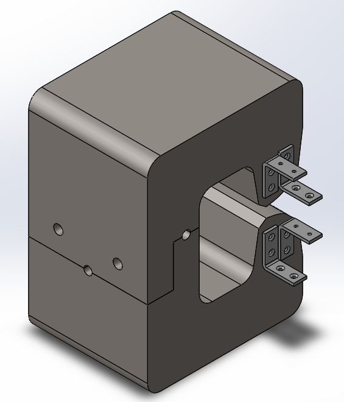

My undergrad engineering thesis at the University of Saskatchewan consisted of a group project to design a prototype dipole magnet for a potential new Canadian Light Source 2.0. Information on the current Canadian Light Source can be found here. The proposed design for the dipole magnet would be used within the electron storage ring of the new light source serving the purpose of bending the electron beam creating a large loop. This engineering design project consisted of designing a dipole core structure and electrical windings to produce a specified magnetic field map that would be utilised in the CLS 2.0.
The two dipole faces surround a metal tube containing the electron beam in order to change the direction of the electrons. The magnet was designed to produce a vertical magnetic field with a small gradient allowing for a smaller magnetific field to be produced on the outter edge. This compensated for the different path the electrons would take within the magent field.
A small prototype magnet was manufactured in order to verify that the magnetic field created matched simulation work conducted on Finite Element Method Magnetics (FEMM). The prototype was scaled down to 50% for the length and width while the length was reduced to 10%. The magnets core was designed in SolidWorks using the shape developed from FEMM.
The prototype was machined from two solid blocks of low carbon steel creating only one connection. By using only two pieces this reduced slack caused through multiple connections allowing for improved alignment while also allowing for a reduction in air gaps which would in turn affect the magnetic field strength.

Due to the large size of the magnet a small defect formed on the dipole face. A long tool bit used during machining was subject to significant forces bending the tool, resulting in incorrect tool positioning creating the defect seen below. This affect is noticeable in the final magnetic field data across the horizontal plane, however, shows little affect to the overall vertical magnetic field.

Cooper wire was wrapped around the core's dipole faces on the upper and lower sections as shown in the figure below. The top and bottom sections of wire were connected in one single continous loop to maintain a constant current between the upper and lower sections. Introduction of a 5 Amp current through the dipole's wires created a magnetic flux within the core, resulting in magnetic field production between the dipole faces.

The produced magnet field was measured and mapped using a magnetic field sensor across the horizontal plane between the two dipole faces. A slight misalignment of the magnet and the magnetic field sensor required a correction to data after collection in order to realign the data along the dipole face. The target of the prototype magnet was to achieve less than a 0.1% difference in measured magnetic field from the predefined magnetic field map over a 5-millimetre range. As shown in the final figure the magnetic field of the prototype magnet stayed within this desired limit and verified that our design produced the desired magnetic field strength and shape.